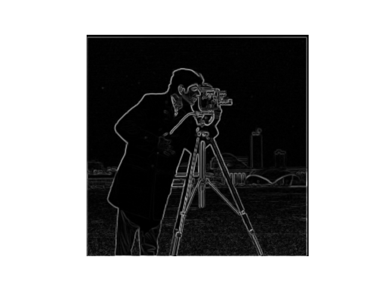
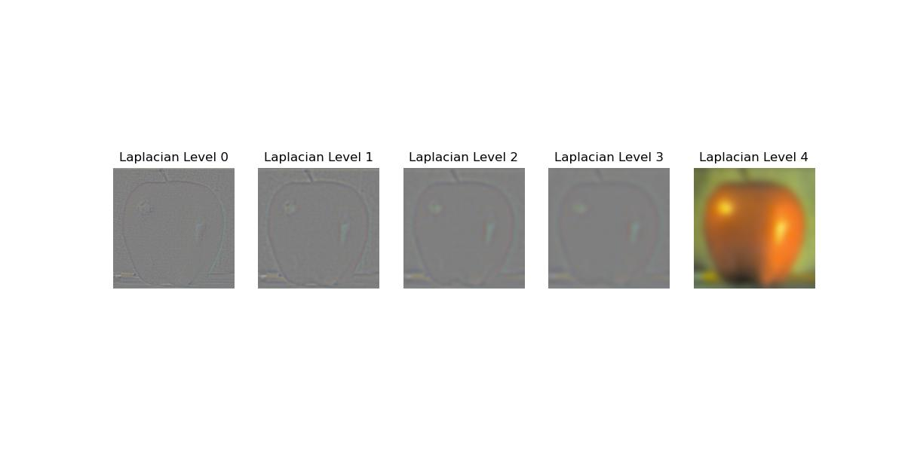
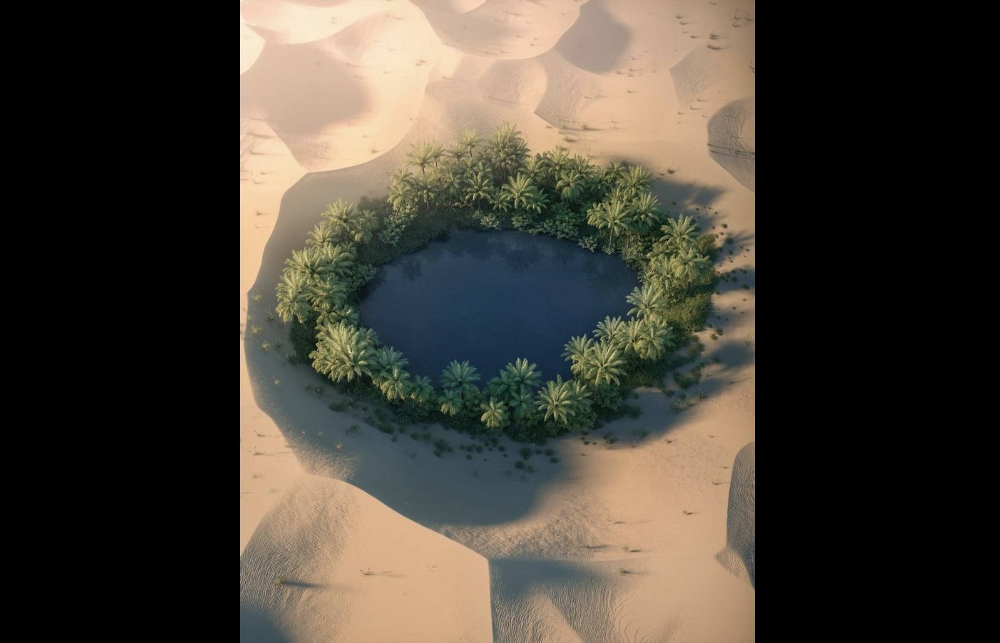

CS180 Project 2
Fun with Filters and Frequencies
by Ruiqi Wang
Overview
In this project, we used low-pass and high-pass filters to get different frequencies, and change frequencies in order to find edges, sharpen images, hybrid images and blend images.
Part 1: Fun with Filters
Part 1.1: Finite Difference Operator
I took the first color channel of cameraman.jpg and turn it into a gray-scale image. Then, I convolved cameraman.jpg with Dx= np.array([[-1, 1]]) and Dy= np.array([[-1], [1]]) respectively to get the partial derivatives below:
Then, I computed the gradient magnitude using sqrt(dx^2 + dy^2), and binarized the graph to get an edge graph with a threshold of 80 over the range of [0, 255]
Binarized edge image with threshold=80
Part 1.2: Derivative of Gaussian (DoG) Filter
Gaussian
I applied the Gaussian filter (using cv2.getGaussianKernel, with sigma=1 and size=5) to blur the image, and then convolved the blurred cameraman.jpg with Dx and Dy respectively.
Using the same method as in part 1.1, I got gradient magnitude image and edge graph(with threshold=30) of the blurred cameraman.jpg. Below is the partial derivatives in both axis, gradient magnitude image, and edge image of the blurred image:

Gaussian gradient magnitude
Binarized edge image with threshold=30
What differences do you see?
The edges are cleaner and smoother. Less noise shows up after blurred by gaussian filter.
Also, quantitatively the threshold for a clear edge graph is much lower, because high frequencies are filtered out.
DoG
Instead of convolving twice using cameraman.jpg, I convolved the 2D gaussian with Dx and Dy respectively to get a derivative of Gaussian filter.
Then, apply DoG to cameraman.jpg. Below is the partial derivatives, gradient magnitude, and edge image using DoG:
DoG
The result of DoG is almost the same, with a similar threshold for clear binarized edge image, except for some different noises.
Part 2: Fun with Frequencies!
Part 2.1: Image "Sharpening"
Approach
An image often looks sharper if it has stronger high frequencies.
Thus, to "sharpen" an image, I use Gaussian filter to blur the image and reatain the low frequencies, then subtract the blurred image from the original image to get the high frequencies.
Finally, I add alpha times of these high frequencies back to make them stronger, thus sharpening the original graph.
In order to combine this into a single convolution operaton, I created a unsharp mask kernel. I created an identity kernel with same size as my gaussian kernal as impulse.
unsharp_kernel = impulse + alpha * high_freq = impulse + alpha * (impulse-gaussian) = (1 + alpha) * impulse - alpha * (gaussian).
Thus, with this kernel function, I can try kernels of different sizes and sigmas to find best results.
First, divide colored image into R,G,B channels; then convolve each channel with the kernel (clip the sharpened image to avoid values > 255); then merge RGB channels back together to get sharpened image.
Result for taj.jpg:

Original taj
Sharpened taj (kernel_size=3, sigma=1, alpha=1)
Result for flower.jpg of my own choice:
Then I picked a picture of a flower. I blurred it using Gaussian filter, and used the same method as before to try to sharpen the blurred flower.
The clear lines are sharpened using the method, but some smaller details did not go back. The sharpened image is much better than blurred ones, but it is not as clear as the original image no matter what my alpha is.
I think this is because some small details are lost when you blurred the image; then when you try to use the blurred image to sharpen it back, you can never get those information that is already lost.

Original flower
Blurred flower (sigma=4, kernel_size=30)
Sharpended blurred flower (sigma=4, kernel_size=15, alpha=3)
Part 2.2: Hybrid Images
Approach
To hybrid two images, first I used rgb2gray from skimage.color to make both images gray-scale.
Then, I aligned the images using the code provided. sktr.rescale is rescaling the color channel as well on my end, so I added channel_axis=-1 to make sure the images still remain 3 channels after rescaling.
I selected the eyes of human and cat to align.
Next, I used gaussian filter to low-pass filter the human image, and use (original - gaussian filtered image) to high-pass filter the cat image.
Then, combine the low frequencies of human and the high frequencies of cat to hybrid the two images. Cat is visiible when you look at the hybrid image closely and Human is visible when you look at the hybrid image from a larger distance.
I also implemented the pyramid function in the starter code to see changes of frequencies for the hybrid image.

Original Nutmeg

Original Derek
Aligned Nutmeg and Derek
Hybrid Nutmeg(sigma1=8) and Derek(sigma2=8)
Cat and Dog
This is my favourite one. I aligned the bottom of their ears and used same approach as before. cutoff frequency is 4 for high-pass filter and 3 for low-pass filter.
Aligned Cat and Dog
Hybrid Cat(sigma1=4) and Dog(sigma2=3)

Frequency Analysis with Fourier Transform for Cat(im1) and Dog(im2)
Happy and Sad faces
I aligned the eyes of the faces. cutoff frequency is 4 for high-pass filter and 3 for low-pass filter.
Aligned Happy and Sad Faces
Hybrid Sad(sigma1=4) and Happy(sigma2=3) faces
Gaussian & Laplacian pyramids
Starbucks and Earth (Failed)
I chose the two endpoints of the horizontal diameter of both images to align. Although both starbucks logo and earth are circles, I failed hybriding them.
The starbucks logo has only two colors, dark green and white, thus is too clear after high-pass filter.
On the other hand, the earth image I found does not use colors with strong contrast, thus it too blurred to recognize after low-pass filter.

Original Earth
Aligned Starbucks and Earth
Hybrid Starbucks(sigma1=2) and Earth(sigma2=2)
Part 2.3 & 2.4: Multiresolution Blending
Approach
Implementation of Gaussian stack and Laplacian stack
Add original image to stack first. Then I applied Gaussian filter to blur the image in previous layer, and add the blurred image to the gaussian stack.
The Laplacian stack has the "difference" between each layer of the Gaussian stack, so I subtract next layer in the Gaussian stack from current layerof Gaussian stack, and add to the Laplacian stack.
Below is the Gaussian stack and Laplacian stack of original apple.jpeg and orange.jpeg.

Multiresolution Blending
Using the Gaussian stack and Laplacian stack function, I blended the laplacian image in each level and then make a clear multiresolution blended image.
First, make a 2-D mask, with left side filled with 0 and right side filled with 1. Make a laplacian stack of the mask.
Then, divide both images into R,G,B channels, and make a laplacian stack for each channel of each image.
Next, for each level in the stack, laplacian mask * image1 laplacian to blend image1, and (1-laplacian mask) * image2 to blend image2. Add the blended image1 and blended image2 to be the laplacian graph of the final blended image in that level.
After that, I got 3 laplacian stacks for the final blended image in R,G,B. Add up laplacian graph to reconstruct the final blended image, and stack RGB channels back to get a colored image.
Apple and Orange with blending process
Tree in Spring and Fall with blending process
To align the trees in two images, I reused the align code in Part2.2. I chose two points in the middle line that I want to blend the pictures together.
Blended Tree in Spring and Fall
Coffee and Lake in Desert (with irregular mask)
I wanted to blend the lake in desert inside a cup of coffee. To do this, I need a ellipse shape mask, so I drew a image of black background and white ellipse.

Original Coffee

Original Lake in Desert
Rescaling and Aligning
To rescale and align the two images to be blended, I still used align code in Part 2.2, and cropped out the black edges after alignment.
Rescaling and aligning the mask with the image takes more time, because I want the mask to change its size and position according to the aligned images and aligned images should not change at all.
The align code provided recenter both images and change sizes according to each other, so I cannot simply reuse that here.
Thus, I first used the provided code to get user input of the points in mask and aigned lake. Then, I rescale the mask using skimage.transform. After that, update p1 and p2 in the mask by rescaling.
Next, I used transform.SimilarityTransform and transform.warp from skimage to align p1 in rescaled mask to p3 in aligned lake. Finally, crop the mask or padd with 0 to make it the same size as lake and coffee.
Select one channel of the final mask and binarize to get a 2-D mask with 0 and 1 to start blending.
Results
With aligned images and mask, I can blended them in the same way as using regular masks.
Conclusion
In this project, I learned a lot about how to use filters and frequencies to change the image. The coolest thing for me is hybriding images.
It's really interesting to me that people's perception of "look closely" and "look from far away" can be manipulated through high and low frequencies, and I like it so much when I can hybrid cute pets together!